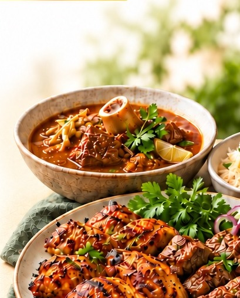

Eating Zabiha Halal Meat
Understanding Healthy Choices in Our Daily Lives
Key Discussion Points
-
Does zabiha slaughter improve meat quality, hygiene and safety?
-
What makes meat truly zabiha—intention, method and conditions?
-
How do we store, cook and serve meat safely at home?
-
How does kindness to animals guide proper zabiha practice?
-
Chicken, beef or goat—what nutrients and portions do we need?
-
Which cuts and cooking methods support heart health?
-
Fresh, frozen or processed—what should we check on labels and certificates?

Explore the evidence, clear up common myths, and make informed choices for your family.
Date: Nov 14th
Time: 6:30pm
Dinner will be served.
LONG ISLAND MUSLIM SOCIETY · 475 EAST MEADOW AVE, EAST MEADOW, NY 11554